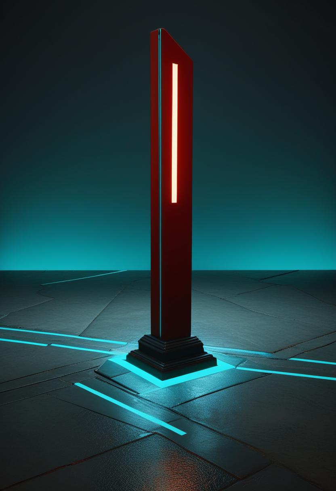
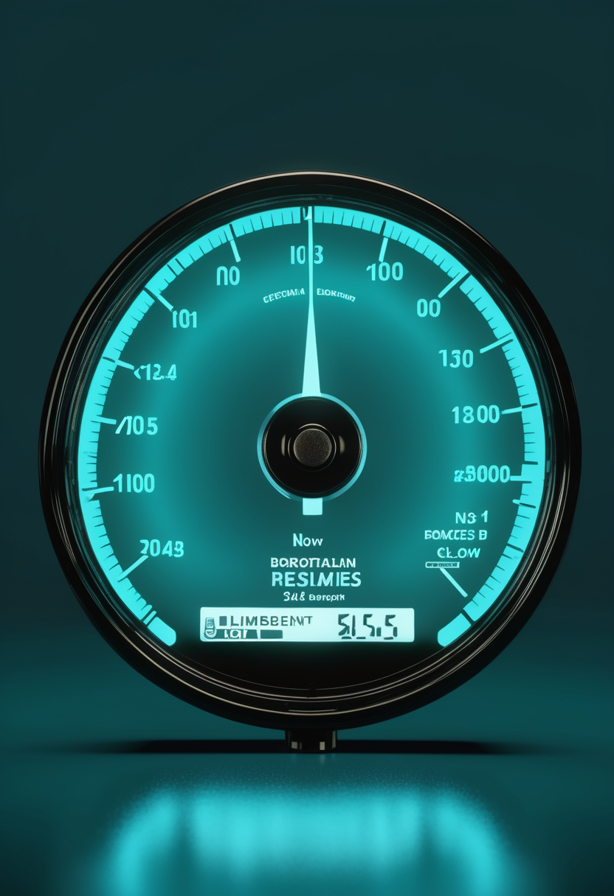
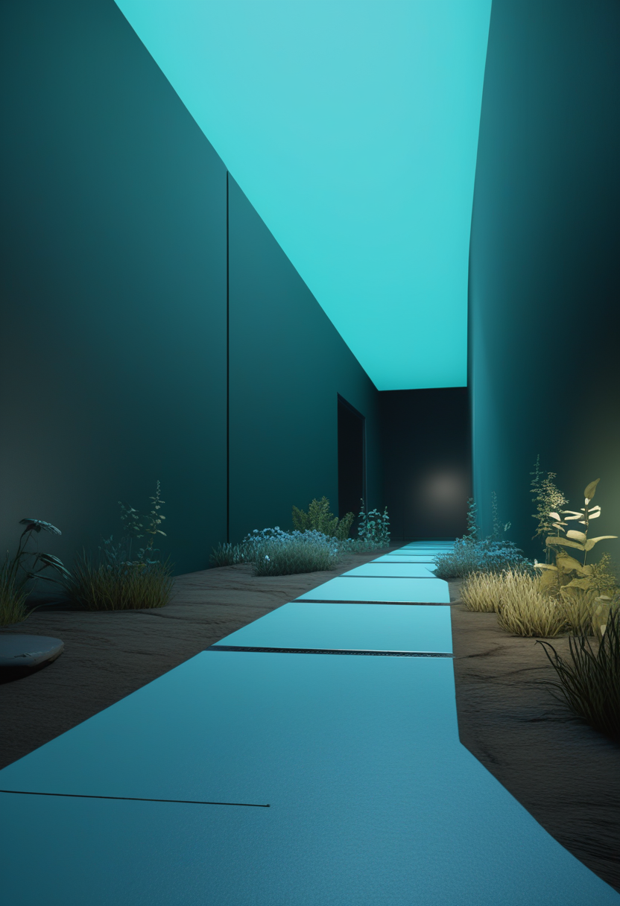
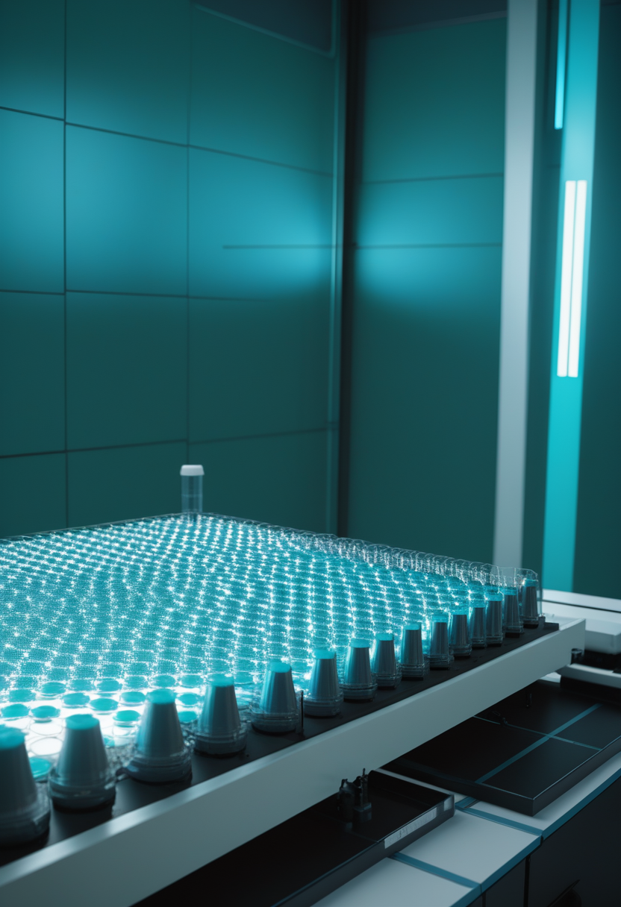
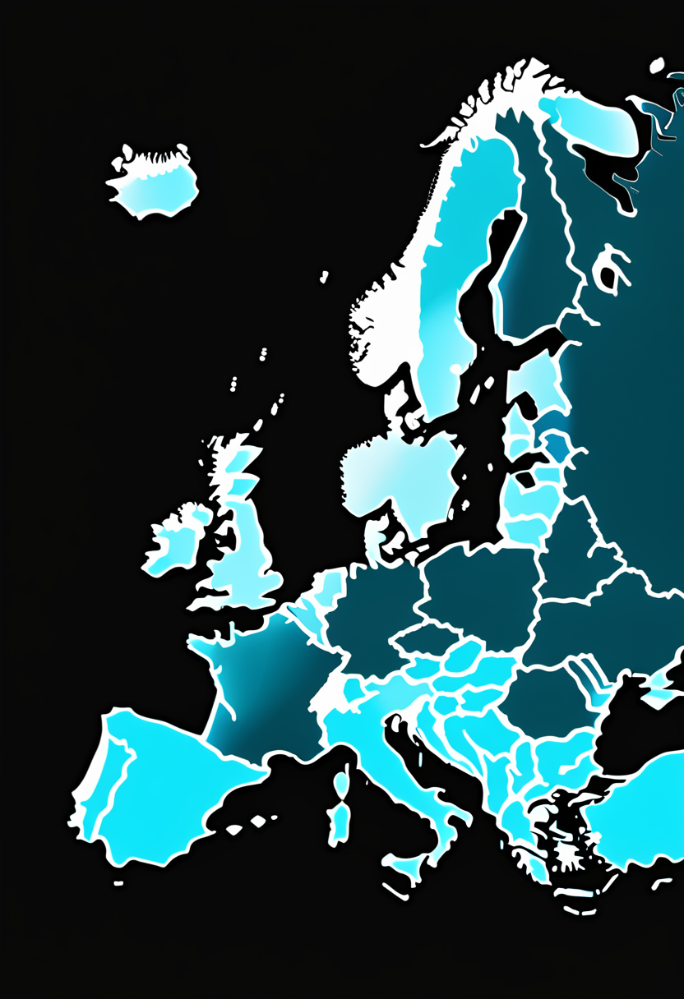
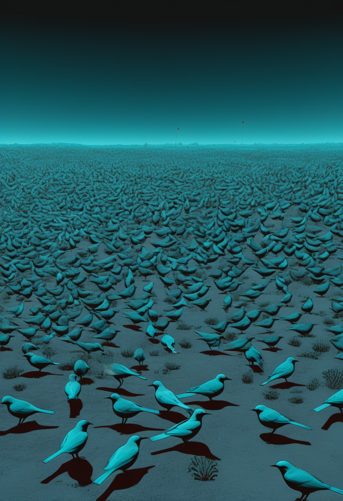
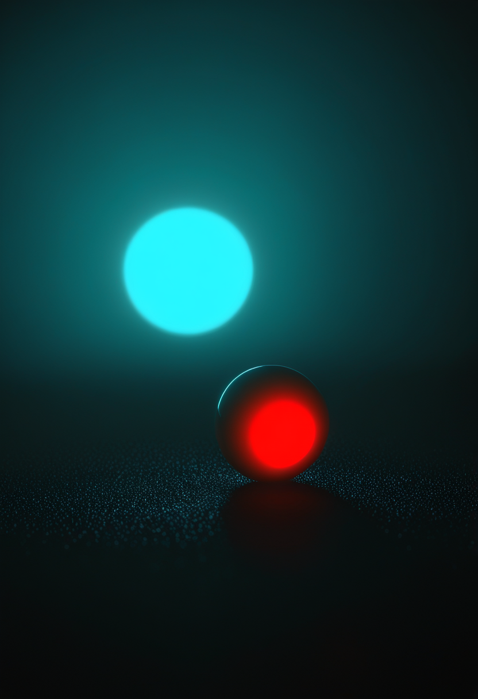
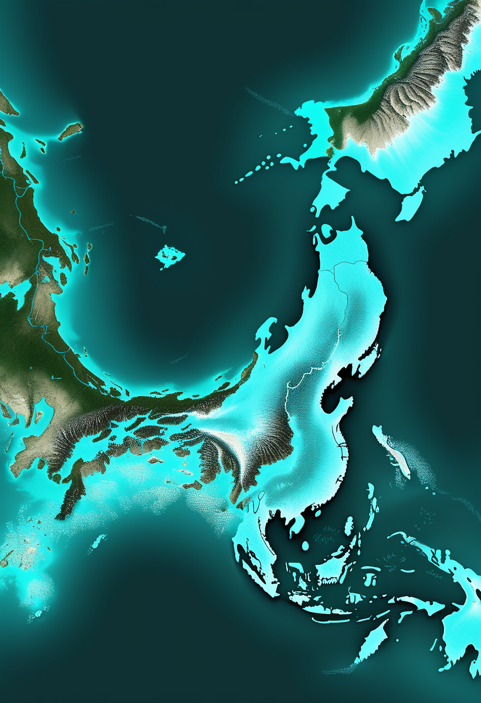
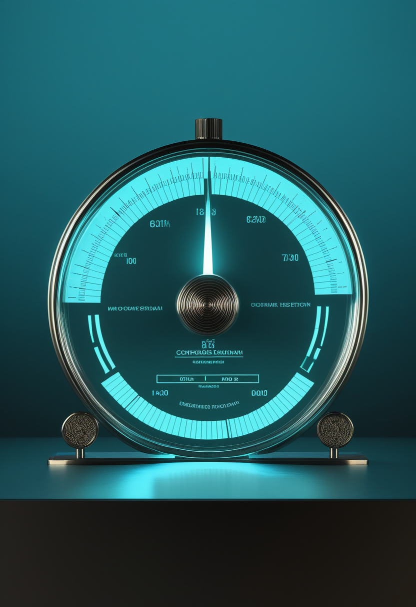

火曜日の便り。コンゴ民主共和国のブンディブジョ型エボラ出血熱は、8月15日までのデータで確定例4,945例・関連死2,325例に達し、2018-2020年のキブ流行(死者2,299人)を上回って同国史上最悪のエボラ流行となったことが8月17日までに確認された。イツリ州が症例の大半を占める一方、151保健区中55保健区へと影響が広がっている。命の章では、Scholar Rockのapitegromabが第2の充填仕上げ施設向けデータを予定より前倒しで提出してPDUFA9月30日への審査を継続し、BiogenのサラナーセンはMDA2026でNfL低下という新データを示し、リスジプラムとヌシネルセンの長期比較試験ではリスジプラムがType1患者の死亡率を78%低減させた。自由の章では、Paradromicsがミシガン大学で初のConnexus BCI植込み手術を完了して『臨床段階企業』となり、Precision Neuroscienceは無線BCIとして初のFDA 510(k)クリアランスを取得、Blackrock Neurotechは62語/分のBCI発話合成をNatureに発表した。基盤の章では、欧州の西ナイル熱が9カ国77地域・429症例に拡大し、オーストラリアでは野鳥のH5型鳥インフルエンザが236件確認された。畏敬の章では、JWSTが宇宙誕生13億年後の銀河に3つの巨大ブラックホールを発見し、日本のH3ロケットは測位衛星みちびき7号機の打ち上げに成功した。そして美の章では、5億1800万年前の化石がクモの牙の起源を明らかにし、1万か所を超える日本の旧石器遺跡が人類のアジア拡散史の空白を埋めつつあり、『デジタル意識モデル』の論文がAIの意識の有無を確率的に評価する試みを示した ― 拡大を続ける流行の速度と、それでも前進を止めない科学の営みが、同じ一日の中で並走した。

8月17日号の続報 ― コンゴ民主共和国のブンディブジョ型エボラ出血熱は、8月15日までのデータで確定例4,945例・関連死2,325例に達したことがECDCの8月17日更新で確認された。前回報告(8月14日)からは確定例101例・死亡53例の増加で、これにより2018-2020年のキブ・エボラ流行(死者2,299人、WHO確定)を上回り、同国史上最も死者数の多いエボラ流行となった(世界全体では2013-2016年の西アフリカ流行の1万1,300人超が依然として最悪)。イツリ州が症例の大半(4,194例、死者1,838人)を占め、151保健区のうち55保健区が影響下にある。ワクチンも特異的治療薬もないブンディブジョ型に対し、接触者追跡と隔離が依然として唯一の手段となっている。
Scholar Rockは8月7日、apitegromabの生物学的製剤承認申請(BLA)審査が第2の充填仕上げ施設を通じて計画通り進んでいると発表した。同社は合意していた期限に先立ち、この第2施設に関するデータパッケージをFDAへ提出済みで、審査終了目標日(PDUFA)である2026年9月30日に変更はない。規制パッケージの中核である第3相SAPPHIRE試験では、非歩行SMA患者において既存のSMN標的療法への上乗せでHFMSEの統計学的に有意な改善が確認されている。

米MDA(筋ジストロフィー協会)2026年臨床科学会議で、Biogenのサラナーセン(BIIB115)の第1b相データが発表された。神経変性のバイオマーカーである血中ニューロフィラメント軽鎖(NfL)の有意な低下と、持続的な生物学的活性を示すシグナルが確認された。ブレークスルーセラピー指定を受けた同薬は、発症前の乳児から成人までを対象に年1回投与での維持を目指す第3相プログラム(STELLAR-1、STELLAR-2、SOLAR)を進めている。

MDA2026で発表された長期比較試験によると、Type1 SMA患児においてリスジプラムはヌシネルセンと比べ死亡率を78%、死亡または恒久的人工呼吸に至る割合を81%それぞれ低減させた。運動機能面でも高い反応率と低い重篤有害事象率が確認された。3種のSMN標的治療(リスジプラム・ヌシネルセン・オナセムノゲンアベパルボベク)が出そろって数年が経ち、焦点は『効くかどうか』から『どの投与経路・頻度が長期予後に優れるか』の実証段階に移っている。
9月30日のアピテグロマブ承認判断が近づく中、SMA治療の競争軸は明確に『長期予後の実証』へ移った。リスジプラムがヌシネルセンに対して示した死亡率78%減という数字は、既存治療同士の間にも無視できない差があることを示しており、次の焦点は新薬の可否だけでなく、既存薬の使い分けの最適化にも及んでいる。

Paradromicsは、FDA承認のEarly Feasibility Study『Connect-One』における最初の外科手術をミシガン大学ヘルスで完了したと発表した。第1号被験者は運動ニューロン疾患により発話が困難な女性で、今後6年間にわたり経過が追跡される。高密度微小電極アレイで神経信号を記録・復号し、胸部の送信機を経て体外受信機へ無線送信するConnexus BCIは、2025年11月のFDA治験機器免除(IDE)承認を受け、ミシガン大学・UCデービス・マサチューセッツ総合病院で被験者選定が進められてきた。CEOのMatt Angle氏は『我々は今、臨床段階の企業になった』と述べた。
Precision Neuroscienceは、高解像度皮質電極アレイ『Layer 7 Cortical Interface』についてFDAから510(k)クリアランスを取得したと発表した。同社によれば、無線BCIデバイスとしては初のFDAクリアランスで、脳表面の電気活動の記録・モニタリング・刺激を目的に最長30日間の植込みが認められる。開頭を伴わず脳実質にも刺入しない薄膜アレイという設計が、NeuralinkやBlackrock Neurotechの実質刺入型との差別化点になっている。同社はシリーズCで1億400万ドルを調達済みで、Beth Israel Deaconess医療センターとの臨床研究も進めている。
Blackrock NeurotechはNature誌に、ALS患者の発話をBCIで62語/分の速度で合成することに成功したとする研究を発表した。従来記録の3.4倍の速度で、自然な会話(約160語/分)に近づきつつある。頭蓋を通して大脳皮質へ留置した64電極のNeuroPortアレイで数か月・数十セッションにわたり信号を収集し、12万5,000語超の語彙で被験者はシステム起動から数分以内に自発的な会話を行えたという。テキスト出力では中央値78語/分、単語誤り率2%を記録した。
植込み型BCIは『実現可能性』の証明から『規制・速度・侵襲度』という3本の実利軸での競争に移った。ParadromicsとBlackrockが臨床実績と発話速度で先行する一方、Precisionは非刺入・無線という設計で先にFDAクリアランスを取った。侵襲度を下げるほど信号の解像度は落ちるはずだが、その代償を『AI復号の賢さ』で埋められるかが次の分岐点になる。
ECDCが8月17日に更新した情報によると、コンゴ民主共和国のブンディブジョ型エボラ出血熱は8月15日までのデータで確定4,945例・死者2,325例に達し、前回報告(8月14日)から確定101例・死亡53例が増加した。イツリ州が症例の大半(4,194例、死者1,838人)を占め、151保健区のうち55保健区が影響下にある。5月17日に宣言されたPHEIC(国際的に懸念される公衆衛生上の緊急事態)は継続しており、Africa CDCとWHOは地域社会主導の封じ込め強化を求めている。ブンディブジョ型には既存のザイール型向けワクチンが効かず、対策は接触者追跡と隔離に依存する。

ECDCの週報によると、2026年シーズンの西ナイル熱は8月13日時点で欧州9カ国・77地域で確認され、国別ではイタリア224例、ギリシャ105例、スペイン42例、北マケドニア30例、ルーマニア18例、フランス6例、セルビア2例、ドイツ・コソボ各1例の計429症例に達した。ギリシャでは症例数が2週間で3倍の65例(報道時点)に増え、65歳以上の患者6人が死亡した。ECDCは西ナイル熱の流行ピークが例年8月末から9月初旬に訪れるとしており、今シーズン最も感染が広がる時期はまだ先にある。

米CDCは8月7日時点で、季節性インフルエンザ監視システムに人におけるH5型鳥インフルエンザを含む異常な活動の兆候は見られないと報告した。オーストラリアでは8月11日時点で野鳥のH5型鳥インフルエンザが236件確認されているが、家禽や農業分野への広がりは確認されていない。米国では2024年以降、酪農・養鶏従事者を中心に71例のヒト感染が報告されているが、CDCは一般市民への健康リスクを引き続き『低』と評価している。世界的には2025年8月から2026年6月までに米国外の3カ国で12例のヒト感染が報告され、うち3例が死亡した。
エボラ・西ナイル熱・鳥インフルエンザの3つは、いずれも『封じ込めの手段が追跡と隔離しかない』か『ワクチンはあるが接種率が壁になる』かのどちらかに分類できる。ブンディブジョ型エボラのように特異的な対抗手段が存在しない病原体が自国史上最悪の流行を更新している一方、鳥インフルエンザのようにヒトへの飛び火が今のところ抑えられている例もあり、対応資源の配分は『手段の有無』で決まっている。
マックス・プランク地球外物理学研究所が主導する国際チームが、ジェイムズ・ウェッブ宇宙望遠鏡(JWST)を用いて地球から125億光年離れた銀河J0148-4214に3つの超大質量ブラックホールを発見したと発表した。観測されたのはビッグバンから約13億年後の姿で、質量はそれぞれ太陽の8,000万倍・60万倍・200万倍。うち2つは銀河中心からわずか620光年の距離にあり、数億年以内に合体すると見込まれている。1つの銀河に3つのブラックホールが確認されたのは初めてで、銀河合体が宇宙初期のブラックホール成長に果たした役割を裏付ける証拠とされる。

JWSTの観測から、ビッグバンから約6億6,000万年後の宇宙に『ブラックホール星』と呼ばれる新種の天体MoM-BH*-1が見つかったとする研究が8月12日にNature誌へ掲載された。恒星のバルマーブレーク(スペクトルの折れ曲がり)としては過去最強の7.7を示しながら、明るさは通常の恒星が物理的に出せる限界の1,000億倍に達する。JWSTが宇宙初期に多数発見してきた正体不明の『小さな赤い点』の謎を解く手がかりとされる一方、8月5日にはハーバード大学のチームが、これらの正体を太陽質量の約10万倍に達する『生きた超大質量星』とする対立仮説を提示しており、決着はついていない。
JAXAは8月11日午前4時23分(日本時間)、測位衛星『みちびき7号機』(QZS-7)をH3ロケット9号機で種子島宇宙センターから打ち上げ、打ち上げから約29分後に衛星の分離と計画軌道への投入を確認したと発表した。当初8月7日に予定されていた打ち上げは、台風13号(ドルフィン)の接近予報を受けて延期されていた。準天頂衛星システム(QZSS)は、都市部のビル陰や山間部でも高仰角の衛星を確保できる日本独自の測位補完システムで、GPSとの相互運用信号に加え独自信号を提供する体制の充実を目指す。
ブラックホール星と三重ブラックホール銀河は、どちらも『宇宙最初期の10億年強で、想定より大きく・早く・複雑にブラックホールが育っていた』という同じ驚きを別角度から裏付けている。地上では対照的に、みちびきの増強という地道な積み上げが、宇宙の謎を解く望遠鏡自身の位置決定能力を静かに支えている。
レスター大学と雲南大学の研究チームが、中国雲南省の澂江(チェンジャン)化石産地から発見した約5億1800万年前の海生節足動物Urokodia aequalisの化石をNature誌に発表した。体長2〜3cmの小さな生物で、X線トモグラフィーによる軟組織の解析から、眼の後方に鋏角(きょうかく)状の付属肢が保存されていることが分かった。これはクモの毒牙やサソリの鋏の祖先にあたる構造の最古級の証拠で、これまでの化石記録を約1,400万年遡らせる。

Nature Communications誌に掲載された論文は、日本列島に1万か所を超える旧石器時代の遺跡が存在し、その多くが精緻な年代測定を伴うにもかかわらず、人類のアジア拡散を語る欧米中心の物語では十分に注目されてこなかったと指摘する。琉球諸島・沖縄では、人類が動物を意図的に新しい環境へ持ち込んだ最古級の事例が示されており、日本列島が更新世の海洋航海や長距離交易網の好例であるだけでなく、アメリカ大陸への移住の出発点の一つだった可能性も論じられている。関連論文では、日本列島に約3万8000年前に現れる後期旧石器時代初期の石器群が、同時代の東ユーラシア他地域とは異なる独自性を持つことが453点の放射性炭素年代データとともに示された。

AIに意識があるかどうかを体系的・確率的に評価する初の試みとして、『デジタル意識モデル(DCM)』と題する論文がarXivで公開・改訂されている。9つの競合する意識理論と専門家評価による指標群を用いた分析では、2024年時点のLLMが意識を持つという証拠は否定的だが、その否定の根拠は単純なAIシステムに対するものほど強くはないとされた。論文は、意識があるAIを『無い』と誤って扱えば道徳的な害が生じ、逆に意識のないAIを『ある』と誤って扱えば資源配分を誤るという、統治上のジレンマを明示的に提起している。
5億年前の化石が示す『牙の起源』と、日本列島の旧石器遺跡が示す『拡散の起点』は、どちらも人類史の物語がまだ書き換えられている途中であることを教えてくれる。一方でデジタル意識モデルの問いは、その物語を『生物の脳』の外側にまで広げようとする最先端の試みであり、証拠が出そろう前に統治の枠組みだけが求められている点で、他のどの章よりも先行した課題を抱えている。
2026年8月15日までのデータで、コンゴ民主共和国のブンディブジョ型エボラ出血熱は確定4,945例・死者2,325例に達し、2018-2020年のキブ流行(死者2,299人)を上回って同国史上最悪のエボラ流行となったことが8月17日までに確認された。命の章では、Scholar Rockのapitegromabが第2施設向けデータを予定より前倒しで提出してPDUFA9月30日への審査を継続し、リスジプラムとヌシネルセンの長期比較試験ではリスジプラムがType1患者の死亡率を78%低減させた。自由の章では、Paradromicsがミシガン大学で初のConnexus BCI植込み手術を完了して『臨床段階企業』となり、Precision Neuroscienceが無線BCIとして初のFDAクリアランスを取得した。基盤の章では、欧州の西ナイル熱が9カ国77地域・429症例に拡大し、オーストラリアでは野鳥のH5型鳥インフルエンザが236件確認された。畏敬の章では、JWSTが宇宙誕生13億年後の銀河に3つの巨大ブラックホールを発見し、日本のH3ロケットはみちびき7号機の打ち上げに成功した。そして美の章では、5億1800万年前の化石がクモの牙の起源を明らかにし、1万か所を超える日本の旧石器遺跡が人類のアジア拡散史の空白を埋めつつあることが示された ― 拡大を続ける流行の速度と、それでも前進を止めない科学の営みが、同じ火曜日の朝に並走した。
では、また明日の朝に。 — JaH